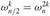

|
|
< Day Day Up > |
|
In Section 30.1, we claimed that if we use complex roots of unity, we can evaluate and interpolate polynomials in Θ(n lg n) time. In this section, we define complex roots of unity and study their properties, define the DFT, and then show how the FFT computes the DFT and its inverse in just Θ(n lg n) time.
A complex nth root of unity is a complex number w such that
wn = 1.
There are exactly n complex nth roots of unity: eπik/n for k = 0, 1,..., n - 1. To interpret this formula, we use the definition of the exponential of a complex number:
eiu = cos(u) + i sin(u).
Figure 30.2 shows that the n complex roots of unity are equally spaced around the circle of unit radius centered at the origin of the complex plane. The value
is called the principal nth root of unity; all of the other complex nth roots of unity are powers of wn.[2]
The n complex nth roots of unity,
form a group under multiplication (see Section 31.3). This group has the same structure as the additive group (Zn, +) modulo n, since implies that  . Similarly, . Essential properties of the complex nth roots of unity are given in the following lemmas.
. Similarly, . Essential properties of the complex nth roots of unity are given in the following lemmas.
For any integers n ≥ 0, k ≥ 0, and d > 0,
| (30.7) |
Proof The lemma follows directly from equation (30.6), since
If n > 0 is even, then the squares of the n complex nth roots of unity are the n/2 complex (n/2)th roots of unity.
Proof By the cancellation lemma, we have , for any nonnegative integer k. Note that if we square all of the complex nth roots of unity, then each (n/2)th root of unity is obtained exactly twice, since
Thus, and have the same square. This property can also be proved using Corollary 30.4, since implies , and thus .
As we shall see, the halving lemma is essential to our divide-and-conquer approach for converting between coefficient and point-value representations of polynomials, since it guarantees that the recursive subproblems are only half as large.
For any integer n ≥ 1 and nonnegative integer k not divisible by n,
Proof Equation (A.5) applies to complex values as well as to reals, and so we have
Requiring that k not be divisible by n ensures that the denominator is not 0, since only when k is divisible by n.
Recall that we wish to evaluate a polynomial
of degree-bound n at (that is, at the n complex nth roots of unity).[3] Without loss of generality, we assume that n is a power of 2, since a given degree-bound can always be raised -we can always add new high-order zero coefficients as necessary.[4] We assume that A is given in coefficient form: a = (a0, a1,..., an-1). Let us define the results yk, for k = 0, 1,..., n - 1, by
The vector y = (y0, y1,..., yn-1) is the Discrete Fourier Transform (DFT) of the coefficient vector a = (a0, a1,..., an-1). We also write y = DFTn(a).
By using a method known as the Fast Fourier Transform (FFT), which takes advantage of the special properties of the complex roots of unity, we can compute DFTn(a)in time Θ(n lg n), as opposed to the Θ(n2) time of the straightforward method.
The FFT method employs a divide-and-conquer strategy, using the even-index and odd-index coefficients of A(x) separately to define the two new polynomials A[0](x) and A[1](x) of degree-bound n/2:
A[0](x) = a0 + a2x + a4x2 + ··· + an-2xn/2-1,
A[1](x) = a1 + a3x + a5x2 + ··· + an-1xn/2-1.
Note that A[0] contains all the even-index coefficients of A (the binary representation of the index ends in 0) and A[1] contains all the odd-index coefficients (the binary representation of the index ends in 1). It follows that
so that the problem of evaluating A(x) at  reduces to
reduces to
evaluating the degree-bound n/2 polynomials A[0](x) and A[1](x) at the points
and then
combining the results according to equation (30.9).
By the halving lemma, the list of values (30.10) consists not of n distinct values but only of the n/2 complex (n/2)th roots of unity, with each root occurring exactly twice. Therefore, the polynomials A[0] and A[1] of degree-bound n/2 are recursively evaluated at the n/2 complex (n/2)th roots of unity. These subproblems have exactly the same form as the original problem, but are half the size. We have now successfully divided an n-element DFTn computation into two n/2-element DFTn/2 computations. This decomposition is the basis for the following recursive FFT algorithm, which computes the DFT of an n-element vector a = (a0, a1,..., an-1), where n is a power of 2.
RECURSIVE-FFT(a) 1 n ← length[a] ▹ n is a power of 2. 2 if n = 1 3 then return a 4 wn ← eπi/n 5 w ← 1 6 a[0] ← (a0, a2,..., an-2) 7 a[1] ← (a1, a3,..., an-1) 8 y[0] ← RECURSIVE-FFT(a[0]) 9 y[1] RECURSIVE-FFT(a[1]) 10 for k ← 0 to n/2 - 1 11 do 12 13 w ← w wn 14 return y ▹ y is assumed to be a column vector.
The RECURSIVE-FFT procedure works as follows. Lines 2 -3 represent the basis of the recursion; the DFT of one element is the element itself, since in this case
Lines 6 -7 define the coefficient vectors for the polynomials A[0] and A[1]. Lines 4, 5, and 13 guarantee that w is updated properly so that whenever lines 11 -12 are executed, . (Keeping a running value of w from iteration to iteration saves time over computing from scratch each time through the for loop.) Lines 8-9 perform the recursive DFTn/2 computations, setting, for k = 0, 1,..., n/2 - 1,
or, since  by the cancellation lemma,
Lines 11-12 combine the results of the recursive DFTn/2 calculations. For y0, y1,..., yn/2-1, line 11 yields
For yn/2, yn/2+1,..., yn-1, letting k = 0, 1,..., n/2 - 1, line 12 yields
Thus, the vector y returned by RECURSIVE-FFT is indeed the DFT of the input vector a.
Within the for loop of lines 10 -13, each value is multiplied by , for k = 0, 1,..., n/2 - 1. The product is both added to and subtracted from  . Because each factor
. Because each factor  is used in both its positive and negative forms, the factors are known as twiddle factors.
is used in both its positive and negative forms, the factors are known as twiddle factors.
To determine the running time of procedure RECURSIVE-FFT, we note that exclusive of the recursive calls, each invocation takes time Θ(n), where n is the length of the input vector. The recurrence for the running time is therefore
|
T (n) |
= |
2T(n/2) + Θ(n) |
|
= |
Θ(n lg n). |
Thus, we can evaluate a polynomial of degree-bound n at the complex nth roots of unity in time Θ(n lg n) using the Fast Fourier Transform.
We now complete the polynomial multiplication scheme by showing how to interpolate the complex roots of unity by a polynomial, which enables us to convert from point-value form back to coefficient form. We interpolate by writing the DFT as a matrix equation and then looking at the form of the matrix inverse.
From equation (30.4), we can write the DFT as the matrix product y = Vna, where Vn is a Vandermonde matrix containing the appropriate powers of wn:
The (k, j) entry of Vn is , for j, k = 0, 1,..., n - 1, and the exponents of the entries of Vn form a multiplication table.
For the inverse operation, which we write as , we proceed by multiplying y by the matrix , the inverse of Vn.
For j, k = 0, 1,..., n - 1, the (j, k) entry of is .
Proof We show that , the n × n identity matrix. Consider the (j, j') entry of :
This summation equals 1 if j' = j, and it is 0 otherwise by the summation lemma (Lemma 30.6). Note that we rely on -(n - 1) < j' - j < n - 1, so that j' - j is not divisible by n, in order for the summation lemma to apply.
Given the inverse matrix  , we have that is given by
, we have that is given by
for j = 0, 1,..., n - 1. By comparing equations (30.8) and (30.11), we see that by modifying the FFT algorithm to switch the roles of a and y, replace wn by , and divide each element of the result by n, we compute the inverse DFT (see Exercise 30.2-4). Thus, can be computed in Θ(n lg n) time as well.
Thus, by using the FFT and the inverse FFT, we can transform a polynomial of degree-bound n back and forth between its coefficient representation and a point-value representation in time Θ(n lg n). In the context of polynomial multiplication, we have shown the following.
For any two vectors a and b of length n, where n is a power of 2,
where the vectors a and b are padded with 0's to length 2n and · denotes the componentwise product of two 2n-element vectors.
Describe the generalization of the FFT procedure to the case in which n is a power of 3. Give a recurrence for the running time, and solve the recurrence.
Suppose that instead of performing an n-element FFT over the field of complex numbers (where n is even), we use the ring Zm of integers modulo m, where m = 2tn/2 + 1 and t is an arbitrary positive integer. Use w = 2t instead of wn as a principal nth root of unity, modulo m. Prove that the DFT and the inverse DFT are well defined in this system.
Given a list of values z0, z1,..., zn-1 (possibly with repetitions), show how to find the coefficients of a polynomial P(x) of degree-bound n + 1 that has zeros only at z0, z1,..., zn-1 (possibly with repetitions). Your procedure should run in time O(n lg2 n). (Hint: The polynomial P(x) has a zero at zj if and only if P(x) is a multiple of (x - zj).)
The chirp transform of a vector a = (a0, a1,..., an-1) is the vector y = (y0, y1,..., yn-1), where  and z is any complex number. The DFT is therefore a special case of the chirp transform, obtained by taking z = wn. Prove that the chirp transform can be evaluated in time O(n lg n) for any complex number z. (Hint: Use the equation
and z is any complex number. The DFT is therefore a special case of the chirp transform, obtained by taking z = wn. Prove that the chirp transform can be evaluated in time O(n lg n) for any complex number z. (Hint: Use the equation
to view the chirp transform as a convolution.)
[2]Many other authors define wn differently: wn = e-πi/n. This alternative definition tends to be used for signal-processing applications. The underlying mathematics is substantially the same with either definition of wn.
[3]The length n is actually what we referred to as 2n in Section 30.1, since we double the degree-bound of the given polynomials prior to evaluation. In the context of polynomial multiplication, therefore, we are actually working with complex (2n)th roots of unity.
[4]When using the FFT for signal processing, padding with zero coefficients to arrive at a power-of-2 size is generally ill-advised, as it tends to introduce high-frequency artifacts. One technique used to pad to a power-of-2 size in signal processing is mirroring. Letting n' be the smallest integer power of 2 greater than n, one way to mirror sets an+j = an-j-2 for j = 0, 1,..., n' - n - 1.
|
|
< Day Day Up > |
|